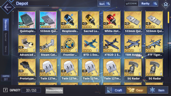

Equipment
Bagian layar peralatan ini adalah tempat Anda dapat melihat peralatan yang belum dipakai dan menyortir peralatan menggunakan filter. Jumlah default peralatan yang dapat disimpan adalah 300 dan hanya peralatan yang tidak dilengkapi yang dihitung dalam jumlah ini.
Anda dapat memperluas penyimpanan Peralatan Anda melalui:
Guild Tech atau memperluas penyimpanan dengan ruby.
Enchanment
karakter dapat menjalani Enhancement di mana atribut dasarnya dapat ditingkatkan dengan mengorbankan karakter lain.
gambar disamping menunjukkan statistik saat ini yang dapat ditingkatkan melalui peningkatan (Firepower Firepower, Torpedo Torpedo, Aviation Aviation, dan Reload Reload). Batas untuk masing-masing atribut ini akan meningkat per level kapal yang diperoleh, hingga maksimumnya saat kapal mencapai LV.100.
Limit Break
Limit Break, atau "Limit Breaking", adalah fitur yang memungkinkan pemain untuk meningkatkan atribut inti kapal, yang meliputi: Meningkatkan atribut stat dasar, Meningkatkan kemampuan dasar (kebanyakan All Out Assault atau rentetan senjata)
, Tambahkan +1 Bintang ke Kelangkaan mereka.